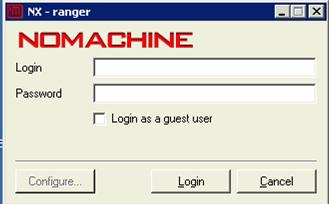
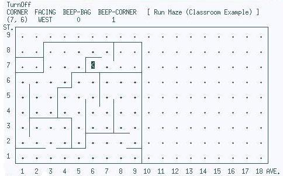
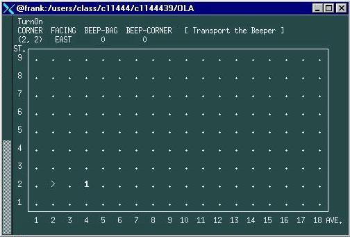

<HTML>
<HEAD>
<TITLE>Lab X1 - Modifying, Compiling, and Executing Karel Programs on Ranger</TITLE>
<META NAME="author" CONTENT="Roland H. Untch">
<META NAME="robots" CONTENT="noindex, nofollow">
</HEAD>

<BODY BACKGROUND="lab1.gif"
      BGCOLOR="white" TEXT="black" LINK="blue" VLINK="navy" ALINK="red">
<CENTER>
 <TABLE BORDER=8> <TR VALIGN=middle>
   <TD BGCOLOR="white"></TD>
   <TD BGCOLOR="white"> <CENTER>
     <FONT SIZE=6 COLOR="navy"> &nbsp; <B>
       CSCI 1170 - <EM>Computer Science I</EM>
     </B></FONT> &nbsp;
     <BR><FONT SIZE=4 COLOR="black"><B>
	   Lab <I>X1</I> -  Modifying, Compiling, and Executing Karel Programs on Ranger
     </B></FONT>
   </CENTER> </TD>
 </TR> </TABLE>
</CENTER>
<BR>

<CENTER> <FONT SIZE=4><B>
Lab <I>X1</I> is an extension of Closed Lab 1.
</B></FONT> </CENTER>
<HR SIZE=3>


<P>
<BR>
<B>EDUCATIONAL OBJECTIVE:</B>
Earlier, you customized your course computer account in
<A HREF="http://www.cs.mtsu.edu/~cs1170/manual/lab1aR/lab1aR.html">
Closed Lab 1a</A> (<I>Customization and Electronic Mail Using WebMail</I>).
You are now ready to use the system to work on programs.
The exercises below will give you a brief introduction to some
<B>UNIX</B> commands and the <B>nedit</B> editor enabling
you to modify, compile, and run a Karel program.

<P>
<B>LOG ONTO <i>ranger</i> USING THE NX WINDOW SYSTEM:</B>
We will be using the NX client access for the exercises below.
The NX client provides a graphical user interface for accessing the <i>ranger</i> system.


<P>
We will use the same process to connect to <I>ranger</I> as we did in Closed Lab 1a,i.e., 
we will be using the NX client program. For a review of accessing the NX software, please
see closed lab 1a.
<p>
Double-click the mouse on the NX desktop icon labeled <B><I>CS Linux Gnome </I></B>
that looks something like this:
<CENTER>
<BR>

</CENTER>

<P>
A box, similar to the one below, will pop-up.
<CENTER>
<BR>

</CENTER>
In this box, enter your username in the field labeled "Login".
After entering your username, use the tab key to skip to the field
labeled "Password" and enter your password.
Once both fields are filled in, click the "Login" button to log on.
If the log in is successful, a new window will pop up on the desktop.
Proceed as in closed lab 1a to bring up a command window.
<P>
Much of UNIX is "command&nbsp;driven"; that's a fancy way of saying
that to get most things done, you type out command instructions instead
of clicking on icons.
UNIX is <I>case-sensitive</I>,
that is, it distinguishes between upper and lower case letters.
It is important to type the commands exactly as indicated.
Failing to put in a space where required is an error; however
when a space is required, the amount of space (i.e., the number of blanks)
is usually not critical.
<P>
Although the command window can be resized,
it MUST be at least 24 rows long and 80 columns wide for our applications/programs to
display properly.
Any smaller than these minimum dimensions and certain commands get messed up.
You can check the current size of your window by entering the following UNIX command:
<BR>
&nbsp; &nbsp; &nbsp; &nbsp; &nbsp;
ranger$ <FONT FACE="Verdana" COLOR=blue><B>stty&nbsp;&nbsp;size</B></FONT>
<BR>
(Do NOT enter the percent sign as part of your
command. It is meant to represent the prompt provided by the system.) 
This will display the number of rows followed by the column width.
If the window is too small, resize it larger.

<P>
<B>A PREVIEW:</B>
First, 
to familiarize yourself with executing a Karel program,
try running the <B>maze</B> executable located in <B>$PUB</B>.
Issue the command
&nbsp; &nbsp; 
ranger$&nbsp;<FONT FACE=Verdana COLOR=blue><B>$PUB/maze&nbsp;&nbsp;$PUB/maze.wor</B></FONT>
<BR>
(Remember, do NOT enter the percent sign as part of your command.)
If all went well, you should have a screen that looks
something like the following:
<CENTER>

</CENTER>

When a Karel program executes successfully, it creates a report file.
Assuming the <B>maze</B> program execution was successful above,
issuing the following command
&nbsp; &nbsp; 
ranger$&nbsp;<FONT FACE=Verdana COLOR=blue><B>cat&nbsp;&nbsp;maze.wor.rpt</B></FONT>
&nbsp; &nbsp; 
will display the report file on your monitor.  It should look like this:
<FONT SIZE="-1" COLOR="brown">
<PRE>
>> maze.wor.rpt: Run Maze (Classroom Example)

>>Initial Situation:
 CORNER  FACING  BEEP-BAG
 (1, 1)  EAST        0
>>Final Situation:  
 CORNER  FACING  BEEP-BAG  BEEP-CORNER  [Run Maze (Classroom Example)         ]
 (7, 6)  WEST        0         1
ST.+-----------------------------------------------------------------------+
 9 | .   .   .   .   .   .   .   .   .   .   .   .   .   .   .   .   .   . |
   |       +-------------------+-------+                                   |
 8 | .   . | .   .   >   >   V | .   . | .   .   .   .   .   .   .   .   . |
   +-------+           +----   |       |                                   |
 7 | .   . | .   >   ^ | <   <   .   . | .   .   .   .   .   .   .   .   . |
   +-------+       +---+---+-----------+                                   |
 6 | >   V   >   ^ | V   < | V   <   < | .   .   .   .   .   .   .   .   . |
   |   |       +---+       |           |                                   |
 5 | ^ | V   ^ | V   >   V | >   V   ^ | .   .   .   .   .   .   .   .   . |
   |   |       |       |   |   |       |                                   |
 4 | ^ | >   ^ | >   ^ | V   ^ | V   ^ | .   .   .   .   .   .   .   .   . |
   |   +-------+---+   |       |       |                                   |
 3 | ^ | V   <   < | ^ | >   ^ | >   V | .   .   .   .   .   .   .   .   . |
   |   |           |   +-------+----   |                                   |
 2 | ^   <   >   ^ | ^ | V   <   <   < | .   .   .   .   .   .   .   .   . |
   +--------   ----+---+           ----+                                   |
 1 | >   >   ^   <   <   <   >   ^   < | .   .   .   .   .   .   .   .   . |
   +-----------------------------------+-----------------------------------+
     1   2   3   4   5   6   7   8   9  10  11  12  13  14  15  16  17  18 AVE.

>>Primitive Execution Counts:
 TurnOn:       1
 TurnOff:      1
 Move:        75
 TurnLeft:    94
 PickBeeper:   0
 PutBeeper:    0
 TOTAL:      171

>>Trace/Debug &lt;Version 6.0.5/UNIX (Build $Revision: 1.12 $/vt100)&gt; Data:
 @EEEEEEEET TWTTTNTTTE TNNNNTWWTS STTTWTTTNN TWTSTTTWTS TETTTSSTTN NNTTTETTTS
 STETNNTTTE TTTSSTETTT STTTWWWTST TTWWWTTTNT TTETNTWWTS TTTWTTTNNN NTTTETTTSS
 TETNNTTTET NTTTETNTTT EETTTSTTTW $

 TC = 9417  11 140 120 60 0 20  7009475.117  (7,6,W) [B0,C1], -0 +0 (1)

</PRE>
</FONT>

<P>
Don't worry about interpreting this report for now.
Although you can probably figure out some of it on your own,
the report format will be described to you later.
For now, the important thing is that you are able to access the report.
If you were unable to access the report, or if anything else did not
work as you expected, ask the lab instructor for help.


 
<P>
<B>A LITTLE BIT OF UNIX:</B>
By following the steps below, you will be able to copy, modify,
compile, and run a C++ program that directs Karel how
to perform the Beeper Transport Task.

<P>
<OL>
<LI>
Do all your work in the <B>OLA</B> directory.
(The <B>OLA</B> directory was automatically created for you
when you customized your account.)
A directory is essentially a folder where a collection of files is stored.
Thus, after logging on to <I>ranger</I>, you would issue the command
<BR>
&nbsp; &nbsp; &nbsp; &nbsp; &nbsp;
ranger$ <FONT FACE="Verdana" COLOR=blue><B>cd&nbsp;&nbsp;OLA</B></FONT>
<BR>
to make the <B>OLA</B> directory your current working directory.
(Last reminder:  Do NOT enter the percent sign as part of your command.
It is meant to represent the prompt provided by the system.)

<P>
Once you are in the <B>OLA</B> directory, you can continue with the next step.


<P>
<LI> Get a copy of the situation (world) file by entering the command
     <BR>
     &nbsp; &nbsp; &nbsp; &nbsp; &nbsp;
     ranger$ <FONT FACE="Verdana" COLOR=blue><B>cp&nbsp;&nbsp;$PUB/kpa0.wor&nbsp;&nbsp;kpa0.wor</B></FONT>
     <BR>
     (Note: The character after <B>kpa</B> is the numeral zero, 
     <I>not</I> the uppercase letter O.)
     <P>
     To check that you have a copy of this file, enter the command
     <BR>
     &nbsp; &nbsp; &nbsp; &nbsp; &nbsp;
     ranger$ <FONT FACE="Verdana" COLOR=blue><B>ls</B></FONT>
     <BR>
     and see if the file name appears.
     If not, you must have entered the
     "<FONT FACE="Verdana" COLOR=blue><B>cp</B></FONT>" command wrong;
     carefully try again.  Remember, UNIX is <I>case-sensitive</I>.

<P>
<LI> Get a copy of the starter (<I>aka</I> skeleton) program source file
     by entering the command
     <BR>
     &nbsp; &nbsp; &nbsp; &nbsp; &nbsp;
     ranger$ <FONT FACE="Verdana" COLOR=blue><B>cp&nbsp;&nbsp;$PUB/kpa0start.cc&nbsp;&nbsp;transport.cc</B></FONT>
     <BR>
     This takes an existing file, <B>$PUB/kpa0start.cc</B>, and makes
     a duplicate of that file inside our current working directory with the
     name <B>transport.cc</B>.
     <BR>
     (To see if you have a copy of this file,
     you can again use the <FONT FACE="Verdana" COLOR=blue><B>ls</B></FONT> command.)

<P>
<LI> Modify the <B>transport.cc</B> source file using the <B>nedit</B> editor.
     Enter the command
     <BR>
     &nbsp; &nbsp; &nbsp; &nbsp; &nbsp;
     ranger$ <FONT FACE="Verdana" COLOR=blue><B>nedit&nbsp;&nbsp;transport.cc&nbsp;&amp;</B></FONT>
     <BR>
     and make your changes.
     Change both occurrences of <FONT COLOR=red><I>student name</I></FONT>
     to your name.
     Change the <FONT COLOR=red><I>sec</I></FONT> in <I>CSCI 1170-sec</I>
     to your section number.
     Change the due date (<FONT COLOR=red><I>mm/dd/yy</I></FONT>) to 
     today's date.
     If you have problems using the editor, raise your hand for
     the lab instructor to come by and help you.

     <P>
     When you first enter the editor, the file will look something like
     the listing below.
     The items to be changed are italicized (in red) on this listing.
     (These items do not appear italicized in the editor window.)
     <HR>
     <PRE>
/* kpa0 BY <FONT COLOR=red><I>student name</I></FONT>,  CSCI 1170-<FONT COLOR=red><I>sec</I></FONT>, Due: <FONT COLOR=red><I>mm/dd/yy</I></FONT> */
//                                                                           
// PROGRAM ID:  kpa0 / The Beeper Transport Task                        
// AUTHOR:  <FONT COLOR=red><I>student name</I></FONT>
// INSTALLATION:  MTSU                                         
// REMARKS:  Sample solution to the Beeper Transport Task   
// described in http://www.mtsu.edu/~untch/karel/programs.html
// Execute using situation (world) file:  $PUB/kpa0.wor

#include &lt;karel.h&gt;
using namespace std;

int main()
{
    TurnOn();
    Move();
    Move();
    PickBeeper();
    Move();
    TurnLeft();
    Move();
    Move();
    PutBeeper();
    Move();
    TurnOff();
}
     </PRE>
     <HR>

<P>
<LI> After you save your changes and exit the <B>nedit</B> editor, you will
     need to compile your program source file.  The command
     <BR>
     &nbsp; &nbsp; &nbsp; &nbsp; &nbsp;
     ranger$ <FONT FACE="Verdana" COLOR=blue><B>aCC&nbsp;&nbsp;transport.cc&nbsp;&nbsp;-o&nbsp;&nbsp;kpa0</B></FONT>
     <BR>
     will do this for you, translating the contents of <B>transport.cc</B>
     into machine language and placing this machine language into an
     executable file with the name <B>kpa0</B>.
     If there are any error messages,
     you have probably made some error in editing.  Go back to the
     previous <B>nedit</B> step and try to correct your errors.
     A successful compilation is "silent", that is, you know the
     compilation step worked if all you get after entering the
     <B>aCC</B> command is another <I>ranger</I> dollar sign prompt.

<P>
<LI> Check that you really have an executable file called <B>kpa0</B>
     by using the command
     <BR>
     &nbsp; &nbsp; &nbsp; &nbsp; &nbsp;
     ranger$ <FONT FACE="Verdana" COLOR=blue><B>ls</B></FONT>
     <BR>
     If the file is there, proceed to the next step.

<P>
<LI> To run your Karel program, enter the name of the executable
     file, <B>kpa0</B>, at the prompt followed by the situation file name.
     That is, enter
     <BR>
     &nbsp; &nbsp; &nbsp; &nbsp; &nbsp;
     ranger$ <FONT FACE="Verdana" COLOR=blue><B>kpa0&nbsp;&nbsp;kpa0.wor</B></FONT>
     <BR>


     If all goes well the screen will then clear and paint the following,
     after which your program should begin executing
     (and Karel should begin moving around):
     <P>
     <CENTER>
     <BR>
     
     </CENTER>

     <P>
     Look sharp---this program executes quickly.
     If you need to cancel execution of the program (or any UNIX command),
     press the <B>Ctrl/C</B> key
     (the <B>Ctrl</B> key pressed simultaneously with the letter <B>C</B> key)
     to interrupt and halt execution. 


<P>
<LI> If your program did not work properly, you will have to go back
     to step 4 and modify your source code.  Remember, you must
     <I>recompile</I> your program using the <B>aCC</B> command
     every time you change your <I>source</I> code.
     If you forget to recompile, you'll be running a version of the
     executable that doesn't correspond to your changed program.

     <P>
     <FONT COLOR=red SIZE="+1"><B>Exercise 11: </B></FONT>
     Once your program works properly, you need to create hardcopy
     printouts of the <B>transport.cc</B> and <B>kpa0.wor.rpt</B> files.
     (The <B>kpa0.wor.rpt</B> file was produced as a side-effect of
     executing your program above.)
     <U>Hand&nbsp;in&nbsp;this&nbsp;hardcopy.</U>
     <b>Don't forget to label the printout with the lines of 
     information requested by your instructor (see class syllabus).</b>
     The command
     <BR>
     &nbsp; &nbsp; &nbsp; &nbsp; &nbsp;
     ranger$ <FONT FACE="Verdana" COLOR=blue><B>lph&nbsp;&nbsp;transport.cc&nbsp;&nbsp;kpa0.wor.rpt</B></FONT>
     <BR>
     will print the two files on the default laser printer
     in KOM.
<!--  ****************************
     <P>
     If instead you wish to print on the line printer in the closet
     (<B>hplp03</B>), enter the command
     <BR>
     &nbsp; &nbsp; &nbsp; &nbsp; &nbsp;
     % <FONT FACE="Verdana" COLOR=blue><B>lph&nbsp;&nbsp;-dhplp03&nbsp;&nbsp;transport.cc&nbsp;&nbsp;kpa0.wor.rpt</B></FONT>
      **************************** -->

<P>
<HR>
  </TD>
</TR>
</TABLE>

If you would like more assistance,
please ask the Lab Assistant for help.

</div>
<HR>


<P>
<LI>
     <FONT COLOR=red SIZE="+1"><B>Exercise 12: </B></FONT>
     You are also to electronically submit the two files you printed above
     (<B>transport.cc</B> and <B>kpa0.wor.rpt</B>);
     use the following UNIX command to do this:
     <BR>
     &nbsp; &nbsp; &nbsp; &nbsp; &nbsp;
     % <FONT FACE="Verdana" COLOR=blue><B>handin&nbsp;&nbsp;"kpa0"&nbsp;&nbsp;transport.cc &nbsp;&nbsp;kpa0.wor.rpt</B></FONT>
     <BR>
Because this is the first time you are using the
<FONT FACE="Verdana" COLOR=blue><B>handin</B></FONT>
command, you will get a message of the form:
<PRE>
NOTE: Please enter your course account's password when prompted.
(Use your instructor-supplied course account password.)
Authentication realm: <svn://svn.cs.mtsu.edu:3690> 076fc91e-5327-0410-80b2-9ad2079b72ac
Password for 'c01474xx':
</PRE>
Enter your course account password (the same one you used to log on to ranger)
as indicated.  This will be the only time you will need to provide
this information for <FONT FACE="Verdana" COLOR=blue><B>handin</B></FONT>;
the information is stored for future uses.
If successful, this <FONT FACE="Verdana" COLOR=blue><B>handin</B></FONT>
command will deposit a copy of the specified files in an electronic repository.
<P>
<LI>
     Be sure to log off <I>ranger</I> see closed lab 1a

</OL>

<HR>
<P>
<B>
Turn in your hardcopy from the line printer
<!--,
along with the laser printer pages from 
<A HREF="http://www.cs.mtsu.edu/~cs1170/manual/lab1aR/lab1aR.html">
Closed Lab 1A</A>,
-->
to the lab assistant before you leave lab today.
</B>

<P ALIGN="center">
<B><FONT size="+1">
Congratulations!  You have finished Lab X1.
</FONT></B>

<P>


<!-- $Header: ~cs1170/public_html/manual/labX1R/labX1R.html $ -->
</BODY>
</HTML>
